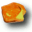
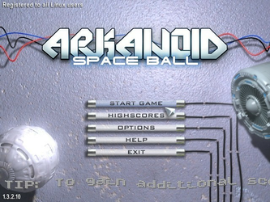
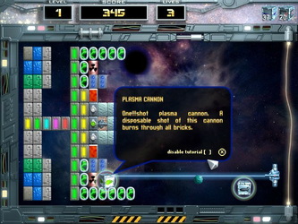
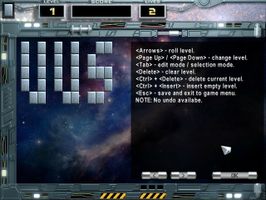

Arkanoid - Space Ball
Dieser Artikel wurde für die folgenden Ubuntu-Versionen getestet:
Ubuntu 14.04 Trusty Tahr
Zum Verständnis dieses Artikels sind folgende Seiten hilfreich:

Arkanoid: Space Ball  ist ein Breakout-Klon, bietet jedoch eine Vielzahl von Verbesserungen. Diese sind unter anderem: Laserkanone, Kraftfelder, Raumschiffe, Breitenänderung des Schlägers und zahlreiche Power-Ups.
ist ein Breakout-Klon, bietet jedoch eine Vielzahl von Verbesserungen. Diese sind unter anderem: Laserkanone, Kraftfelder, Raumschiffe, Breitenänderung des Schlägers und zahlreiche Power-Ups.
Mit dem Paddle wird der Ball so gelenkt, dass er die Mauersteine trifft. Ein Level gilt als gewonnen, sofern man alle Steine abgeräumt hat. Verpasst man den Ball, so erhält man einen neuen Spielball - verliert aber ein Leben. Nachdem diese aufgebraucht sind, verliert man das Spiel.
Die Linuxversion des Spiels steht kostenlos zur Verfügung.
|  |  |
| Menü | Spielszene |
Voraussetzungen¶
Folgendes Paket wird benötigt (bei 64-bit-Systemen siehe auch Problembehebung):
libsdl-mixer1.2 (universe)
 mit apturl
mit apturl
Paketliste zum Kopieren:
sudo apt-get install libsdl-mixer1.2
sudo aptitude install libsdl-mixer1.2
Installation¶
Die Datei arkanoidsb-1.3.2.10.tar.bz2  (Alternativlink ) herunterladen und das Archiv entpacken [1], z.B. nach ~/Spiele. Nun in den Ordner arkanoidsb wechseln und das Spiel über
(Alternativlink ) herunterladen und das Archiv entpacken [1], z.B. nach ~/Spiele. Nun in den Ordner arkanoidsb wechseln und das Spiel über arkanoidsb starten. Es empfiehlt sich, einen Menüeintrag [3] vorzunehmen.
Bedienung¶
Die Steuerung ist einfach gehalten und geschieht primär mit der Maus. Für Abwechslung sorgt der ins Spiel integrierte Leveleditor. Diese Eigenkreationen können im Menü ausgewählt und gespielt werden.
Hinter den Menüpunkten verbirgt sich:
| Bedienung | |
| Menüpunkt | Beschreibung |
| "Start game" | Spiel starten/Leveleditor/Eigene Level spielen |
| "Highscores" | Höchstpunktzahlen ersehen. |
| "Options" | Fenster- und Vollbildmodus auswählen, Lautstärke anpassen, OpenGL (de)aktivieren und Farbtiefe festlegen. Einstellungen werden im Ordner ~/.config/arkanoidsb/ im Homeverzeichnis gespeichert. |
| "Help" | Spielbeschreibung (inkl. Power-Ups, Blöcken etc.) |
|  |
| Leveleditor |
Startparameter¶
Der folgende Befehl startet das Spiel mit OpenGL im Fenstermodus:
arkanoidsb -w -g
Weitere Möglichkeiten sind vorhanden:
| Bedienung | |
| Parameter | Beschreibung |
-f | Vollbild |
-w | Fenstermodus |
-s | Softwaremodus |
-g | OpenGL verwenden |
-h | Hilfe |
Problembehebung¶
64-bit-Systeme¶
Bei der Verwendung eines 64-bit-Systems müssen noch die fehlenden Abhängigkeiten installiert [4] werden:
libsdl-image1.2:i386 (universe)
libsdl-mixer1.2:i386 (universe)
mit apturl
Paketliste zum Kopieren:
sudo apt-get install libsdl-image1.2:i386 libsdl-mixer1.2:i386
sudo aptitude install libsdl-image1.2:i386 libsdl-mixer1.2:i386
Hinweis:
Bei den Paketen muss es sich zwingend um die 32-bit-Versionen handeln. Auch wenn auf einem 64-bit-System die Pakete libsdl-image1.2 und libsdl-mixer1.2 schon installiert sind, erkennt das Spiel diese nicht!


Infobox¶
| Arkanoid: Space Ball | |
| Genre: | Arcade |
| Sprache: | |
| Veröffentlichungen: | 2007 |
| Entwickler: | 'WE' Group |
| Systemvoraussetzungen: | - |
| Medien: | Download |
| Strichcode/EAN/GTIN: | - |
| Läuft mit: | nativ |
- Erstellt mit Inyoka
-
 2004 – 2017 ubuntuusers.de • Einige Rechte vorbehalten
2004 – 2017 ubuntuusers.de • Einige Rechte vorbehalten
Lizenz • Kontakt • Datenschutz • Impressum • Serverstatus -
Serverhousing gespendet von